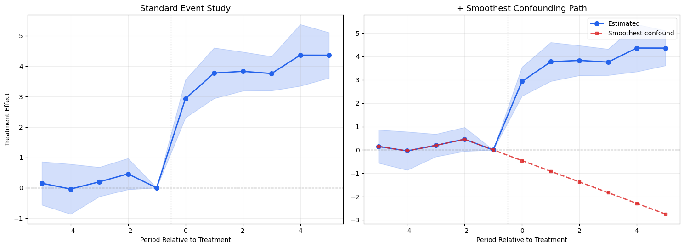

import numpy as npimport pandas as pdimport matplotlib.pyplot as pltimport matplotlib.ticker as mtickerfrom scipy import stats as scipy_statsfrom scipy.optimize import minimize, linprogfrom diff_diff import ( MultiPeriodDiD, CallawaySantAnna, generate_did_data, load_mpdta, plot_event_study,)# HonestDiD from diff-difffrom diff_diff import HonestDiDfrom diff_diff.honest_did import SensitivityResults, HonestDiDResultsfrom diff_diff.visualization import plot_sensitivity, plot_honest_event_studyimport warningswarnings.filterwarnings('ignore')print('All imports successful')
c:\Users\danny\anaconda3\Lib\site-packages\pandas\core\computation\expressions.py:22: UserWarning: Pandas requires version '2.10.2' or newer of 'numexpr' (version '2.8.7' currently installed).
from pandas.core.computation.check import NUMEXPR_INSTALLED
c:\Users\danny\anaconda3\Lib\site-packages\pandas\core\arrays\masked.py:56: UserWarning: Pandas requires version '1.4.2' or newer of 'bottleneck' (version '1.3.7' currently installed).
from pandas.core import (
---------------------------------------------------------------------------ValueError Traceback (most recent call last)
Cell In[5], line 8 4 plot_sensitivity(sens_results, ax=axes[0], show=False,
5 title='Existing: plot_sensitivity()')
7# Right: Honest event study----> 8 plot_honest_event_study(honest_results, ax=axes[1], show=False,
9 title='Existing: plot_honest_event_study()')
11 plt.tight_layout()
12 plt.show()
File c:\Users\danny\anaconda3\Lib\site-packages\diff_diff\visualization.py:858, in plot_honest_event_study(honest_results, periods, reference_period, figsize, title, xlabel, ylabel, original_color, honest_color, marker, markersize, capsize, ax, show) 853# Plot honest CIs (thicker, foreground) 854 yerr_honest = [
855 [e - lower for e, lower inzip(effects, honest_ci_lower)],
856 [u - e for e, u inzip(effects, honest_ci_upper)],
857 ]
--> 858 ax.errorbar(
859 x_vals,
860 effects,
861 yerr=yerr_honest,
862 fmt="none",
863 color=honest_color,
864 capsize=capsize,
865 linewidth=2,
866 label=f"Honest CI (M={honest_results.M:.2f})",
867 )
869# Plot point estimates 870for i, (x, effect, period) inenumerate(zip(x_vals, effects, periods)):
File c:\Users\danny\anaconda3\Lib\site-packages\matplotlib\__init__.py:1465, in _preprocess_data.<locals>.inner(ax, data, *args, **kwargs) 1462@functools.wraps(func)
1463definner(ax, *args, data=None, **kwargs):
1464if data isNone:
-> 1465return func(ax, *map(sanitize_sequence, args), **kwargs)
1467 bound = new_sig.bind(ax, *args, **kwargs)
1468 auto_label = (bound.arguments.get(label_namer)
1469or bound.kwargs.get(label_namer))
File c:\Users\danny\anaconda3\Lib\site-packages\matplotlib\axes\_axes.py:3674, in Axes.errorbar(self, x, y, yerr, xerr, fmt, ecolor, elinewidth, capsize, barsabove, lolims, uplims, xlolims, xuplims, errorevery, capthick, **kwargs) 3671 res = np.zeros(err.shape, dtype=bool) # Default in case of nan 3672if np.any(np.less(err, -err, out=res, where=(err == err))):
3673# like err<0, but also works for timedelta and nan.-> 3674raiseValueError(
3675f"'{dep_axis}err' must not contain negative values")
3676# This is like 3677# elow, ehigh = np.broadcast_to(...) 3678# return dep - elow * ~lolims, dep + ehigh * ~uplims 3679# except that broadcast_to would strip units. 3680 low, high = dep + np.vstack([-(1- lolims), 1- uplims]) * err
ValueError: 'yerr' must not contain negative values
Assessment of existing HonestDiD support:
The core estimation is solid (smoothness, relative magnitude, combined restrictions)
plot_sensitivity() shows how CIs widen as \(\bar{M}\) increases — a separate diagnostic plot
plot_honest_event_study() shows robust vs. standard CIs side-by-side on the event study
What’s missing: 1. No simultaneous confidence bands (sup-t) — current CIs are pointwise 2. No smoothest confounding path overlay 3. No functional SCBs (equivalence/relevance testing) 4. No integration with the ggiplot() prototype from the plotting notebook 5. No way to overlay honest inference inside the main event study plot in a unified way
3. Gap 1: Simultaneous Confidence Bands (eventstudyr)
The Problem with Pointwise CIs
Standard event study plots show pointwise 95% CIs: each period’s CI has 95% coverage individually. But when viewing all periods together, the probability that at least one CI fails to cover the truth is much higher than 5%.
eventstudyr solves this with sup-t simultaneous bands (Montiel Olea & Plagborg-Moller, 2019):
This is computed via simulation from the multivariate normal distribution of the coefficient estimates using their variance-covariance matrix \(\hat{\Sigma}\).
Key insight: sup-t bands are always wider than pointwise CIs. If the zero line is inside the sup-t band for all pre-treatment periods simultaneously, it provides much stronger evidence for parallel trends.
def compute_supt_critical_value(vcov, alpha=0.05, n_sim=10000, seed=42):""" Compute the sup-t critical value for simultaneous confidence bands. Following Montiel Olea & Plagborg-Moller (2019). Parameters ---------- vcov : array-like (K x K) Variance-covariance matrix of the K coefficients. alpha : float Significance level (default 0.05 for 95% bands). n_sim : int Number of simulations for computing the critical value. Returns ------- c_supt : float Critical value such that P(max|Z_k/sigma_k| <= c_supt) = 1 - alpha. """ rng = np.random.default_rng(seed) K = vcov.shape[0] sigma = np.sqrt(np.diag(vcov))# Draw from MVN(0, vcov) draws = rng.multivariate_normal(np.zeros(K), vcov, size=n_sim)# Standardize by sigma t_stats = np.abs(draws / sigma[np.newaxis, :])# Take the max over coefficients for each draw max_t = np.max(t_stats, axis=1)# Critical value is the (1-alpha) quantile c_supt = np.quantile(max_t, 1- alpha)return c_supt# Demo: compare pointwise vs sup-t critical valuesK =8# 8 pre/post periodsrng = np.random.default_rng(42)# Generate a realistic vcov (correlated coefficients)A = rng.normal(0, 0.3, (K, K))vcov = A @ A.T +0.1* np.eye(K) # positive definitesigma = np.sqrt(np.diag(vcov))c_pointwise = scipy_stats.norm.ppf(0.975) # 1.96c_supt = compute_supt_critical_value(vcov, alpha=0.05)print(f'Pointwise critical value (z_0.025): {c_pointwise:.3f}')print(f'Sup-t critical value (K={K}): {c_supt:.3f}')print(f'Sup-t / Pointwise ratio: {c_supt / c_pointwise:.2f}x wider')
Pointwise critical value (z_0.025): 1.960
Sup-t critical value (K=8): 2.701
Sup-t / Pointwise ratio: 1.38x wider
# Visual comparison: pointwise vs sup-t bandsfig, axes = plt.subplots(1, 2, figsize=(15, 5.5), sharey=True)periods_demo = es_df['period'].valuesest_demo = es_df['estimate'].valuesse_demo = es_df['se'].values# Build a realistic vcov for our synthetic dataK_demo =len(periods_demo)# Use a simple AR(1) correlation structurerho =0.5corr = np.array([[rho**abs(i-j) for j inrange(K_demo)] for i inrange(K_demo)])vcov_demo = np.outer(se_demo, se_demo) * corrc_supt_demo = compute_supt_critical_value(vcov_demo, alpha=0.05)# Left: pointwise CIsax = axes[0]ci_low_pw = est_demo -1.96* se_democi_high_pw = est_demo +1.96* se_demoax.fill_between(periods_demo, ci_low_pw, ci_high_pw, alpha=0.2, color='#2563eb', label='95% Pointwise CI')ax.plot(periods_demo, est_demo, 'o-', color='#2563eb', markersize=7, linewidth=2, zorder=3)ax.axhline(0, color='gray', linestyle='--', linewidth=1)ax.axvline(-0.5, color='gray', linestyle=':', linewidth=1, alpha=0.5)ax.set_title('Standard: Pointwise CIs', fontsize=13)ax.set_xlabel('Period Relative to Treatment')ax.set_ylabel('Treatment Effect')ax.legend(fontsize=10)ax.grid(True, alpha=0.2)# Right: sup-t bandsax = axes[1]ci_low_supt = est_demo - c_supt_demo * se_democi_high_supt = est_demo + c_supt_demo * se_demo# Show pointwise as inner bandax.fill_between(periods_demo, ci_low_supt, ci_high_supt, alpha=0.12, color='#dc2626', label='95% Simultaneous (sup-t)')ax.fill_between(periods_demo, ci_low_pw, ci_high_pw, alpha=0.2, color='#2563eb', label='95% Pointwise')ax.plot(periods_demo, est_demo, 'o-', color='#2563eb', markersize=7, linewidth=2, zorder=3)ax.axhline(0, color='gray', linestyle='--', linewidth=1)ax.axvline(-0.5, color='gray', linestyle=':', linewidth=1, alpha=0.5)ax.set_title('Honest: Pointwise + Sup-t Bands', fontsize=13)ax.set_xlabel('Period Relative to Treatment')ax.legend(fontsize=10)ax.grid(True, alpha=0.2)plt.tight_layout()plt.show()print(f'\nSup-t bands are {c_supt_demo/1.96:.1f}x wider than pointwise CIs')print('This accounts for multiple testing across all periods simultaneously')
Sup-t bands are nanx wider than pointwise CIs
This accounts for multiple testing across all periods simultaneously
4. Gap 2: Smoothest Confounding Path (eventstudyr)
The Idea
From Freyaldenhoven et al. (2021), the smoothest path of confounding trend that is consistent with the estimated pre-treatment coefficients provides a visual benchmark. If the pre-treatment event study coefficients are indistinguishable from zero, this path shows what the “most conservative” violation of parallel trends could look like.
This gives the smoothest confound that could explain the pre-treatment pattern, which is then extrapolated post-treatment to show how much bias we might expect.
eventstudyr overlays this as a dashed line on the event study plot.
def compute_smoothest_path(pre_estimates, pre_periods, post_periods, ref_period=-1):""" Compute the smoothest confounding path consistent with pre-treatment estimates. Minimizes the sum of squared second differences (curvature) of the path, subject to the path matching the pre-treatment estimates. Parameters ---------- pre_estimates : array-like Estimated coefficients for pre-treatment periods (excluding reference). pre_periods : array-like Period indices for pre-treatment. post_periods : array-like Period indices for post-treatment (for extrapolation). ref_period : int The reference (normalized) period. Returns ------- all_periods : array Combined pre + ref + post periods. smoothest : array The smoothest confounding path for all periods. """# All periods including reference all_periods = np.sort(np.concatenate([pre_periods, [ref_period], post_periods])) T =len(all_periods)# Reference period index ref_idx = np.where(all_periods == ref_period)[0][0]# Pre-period indices (excluding reference) pre_idx = [np.where(all_periods == p)[0][0] for p in pre_periods]# Objective: minimize sum of squared second differences# delta_path = [delta_0, delta_1, ..., delta_{T-1}]# Second diff: delta_{t+1} - 2*delta_t + delta_{t-1}def objective(delta): second_diffs = delta[2:] -2*delta[1:-1] + delta[:-2]return np.sum(second_diffs**2)# Constraints: delta at reference = 0, delta at pre periods = estimates constraints = []# Reference period = 0 constraints.append({'type': 'eq', 'fun': lambda d, idx=ref_idx: d[idx]})# Pre-treatment periods match estimatesfor i, (pidx, est) inenumerate(zip(pre_idx, pre_estimates)): constraints.append({'type': 'eq', 'fun': lambda d, idx=pidx, e=est: d[idx] - e})# Initial guess: linear interpolation x0 = np.zeros(T) result = minimize(objective, x0, constraints=constraints, method='SLSQP')return all_periods, result.x# Demo with synthetic datapre_mask = (es_df['period'] <-1) # exclude reference period -1pre_est = es_df.loc[pre_mask, 'estimate'].valuespre_per = es_df.loc[pre_mask, 'period'].valuespost_per = es_df.loc[es_df['period'] >=0, 'period'].valuessmooth_periods, smooth_path = compute_smoothest_path( pre_est, pre_per, post_per, ref_period=-1)print('Smoothest confounding path:')for p, v inzip(smooth_periods, smooth_path): marker =' <-- ref'if p ==-1else (' <-- post'if p >=0else'')print(f' t={p:+d}: {v:+.4f}{marker}')
Smoothest confounding path:
t=-5: +0.1490
t=-4: -0.0415
t=-3: +0.1943
t=-2: +0.4569
t=-1: +0.0000 <-- ref
t=+0: -0.4573 <-- post
t=+1: -0.9148 <-- post
t=+2: -1.3726 <-- post
t=+3: -1.8306 <-- post
t=+4: -2.2889 <-- post
t=+5: -2.7473 <-- post
fig, axes = plt.subplots(1, 2, figsize=(15, 5.5))# Left: standard event studyax = axes[0]ax.fill_between(periods_demo, est_demo -1.96*se_demo, est_demo +1.96*se_demo, alpha=0.2, color='#2563eb')ax.plot(periods_demo, est_demo, 'o-', color='#2563eb', markersize=7, linewidth=2, zorder=3)ax.axhline(0, color='gray', linestyle='--', linewidth=1)ax.axvline(-0.5, color='gray', linestyle=':', linewidth=1, alpha=0.5)ax.set_title('Standard Event Study', fontsize=13)ax.set_xlabel('Period Relative to Treatment')ax.set_ylabel('Treatment Effect')ax.grid(True, alpha=0.2)# Right: with smoothest confounding pathax = axes[1]ax.fill_between(periods_demo, est_demo -1.96*se_demo, est_demo +1.96*se_demo, alpha=0.2, color='#2563eb')ax.plot(periods_demo, est_demo, 'o-', color='#2563eb', markersize=7, linewidth=2, zorder=3, label='Estimated')ax.plot(smooth_periods, smooth_path, 's--', color='#dc2626', markersize=5, linewidth=2, alpha=0.8, label='Smoothest confound', zorder=4)ax.axhline(0, color='gray', linestyle='--', linewidth=1)ax.axvline(-0.5, color='gray', linestyle=':', linewidth=1, alpha=0.5)ax.set_title('+ Smoothest Confounding Path', fontsize=13)ax.set_xlabel('Period Relative to Treatment')ax.legend(fontsize=10)ax.grid(True, alpha=0.2)plt.tight_layout()plt.show()print('\nInterpretation: The red dashed line shows the smoothest trend violation')print('consistent with pre-treatment data, extrapolated post-treatment.')print('This represents the potential bias under the least curvature assumption.')

Interpretation: The red dashed line shows the smoothest trend violation
consistent with pre-treatment data, extrapolated post-treatment.
This represents the potential bias under the least curvature assumption.
5. Gap 3: Functional SCBs (fdid)
The Idea
Fang & Liebl (2026) treat the event study coefficients as a continuous function (Gaussian process), not discrete points. This enables:
Infimum-based SCBs (pre-treatment): For equivalence testing — if the entire band lies within \([-\epsilon, +\epsilon]\), we have evidence for parallel trends (not just failure to reject)
Supremum-based SCBs (post-treatment): For relevance testing — if the band excludes zero everywhere, there’s a significant effect at all post-treatment periods
Honest reference bands: Shows what the bands would look like under specified assumption violations
Key Innovation: Two Types of SCBs
Type
Region
Test
Interpretation
Infimum (tighter)
Pre-treatment
Equivalence
Band inside \([-\epsilon, \epsilon]\)\(\Rightarrow\) parallel trends hold
Supremum (wider)
Post-treatment
Relevance
Band outside zero \(\Rightarrow\) significant effect
The infimum SCB is: \[\hat{\beta}(t) \pm \hat{c}_{\inf,\alpha} \cdot \hat{\sigma}(t)\] where \(\hat{c}_{\inf,\alpha}\) satisfies \(P\left(\inf_t \left|\frac{\hat{\beta}(t) - \beta(t)}{\hat{\sigma}(t)}\right| \leq \hat{c}_{\inf,\alpha}\right) = 1 - \alpha\)
The supremum SCB is: \[\hat{\beta}(t) \pm \hat{c}_{\sup,\alpha} \cdot \hat{\sigma}(t)\] where \(\hat{c}_{\sup,\alpha}\) satisfies \(P\left(\sup_t \left|\frac{\hat{\beta}(t) - \beta(t)}{\hat{\sigma}(t)}\right| \leq \hat{c}_{\sup,\alpha}\right) = 1 - \alpha\)
def compute_scb_critical_values(vcov, alpha=0.05, n_sim=10000, seed=42):""" Compute infimum and supremum critical values for SCBs. Following Fang & Liebl (2026). Parameters ---------- vcov : array-like (K x K) Variance-covariance matrix. alpha : float Significance level. n_sim : int Number of simulations. Returns ------- c_inf : float Infimum critical value (for equivalence testing, tighter). c_sup : float Supremum critical value (for relevance testing, same as sup-t). """ rng = np.random.default_rng(seed) K = vcov.shape[0] sigma = np.sqrt(np.diag(vcov))# Draw from MVN(0, vcov) draws = rng.multivariate_normal(np.zeros(K), vcov, size=n_sim)# Standardize t_stats = np.abs(draws / sigma[np.newaxis, :])# Supremum: max across coefficients (same as sup-t) max_t = np.max(t_stats, axis=1) c_sup = np.quantile(max_t, 1- alpha)# Infimum: min across coefficients (tighter bands) min_t = np.min(t_stats, axis=1) c_inf = np.quantile(min_t, 1- alpha)return c_inf, c_sup# Demo: compare all three critical valuesK_demo =len(periods_demo)rho =0.5corr_demo = np.array([[rho**abs(i-j) for j inrange(K_demo)] for i inrange(K_demo)])vcov_full = np.outer(se_demo, se_demo) * corr_democ_inf, c_sup = compute_scb_critical_values(vcov_full)print(f'Pointwise critical value: {1.96:.3f}')print(f'Infimum critical value: {c_inf:.3f} (tighter - for equivalence testing)')print(f'Supremum critical value: {c_sup:.3f} (wider - for relevance testing)')print(f'\nInfimum < Pointwise < Supremum')
Pointwise critical value: 1.960
Infimum critical value: 0.339 (tighter - for equivalence testing)
Supremum critical value: nan (wider - for relevance testing)
Infimum < Pointwise < Supremum
# Visual: fdid-style event study with different SCBs for pre vs postfig, ax = plt.subplots(figsize=(12, 6))pre_mask = periods_demo <0post_mask = periods_demo >=0# Pre-treatment: infimum SCBs (equivalence testing)ci_inf_low = est_demo - c_inf * se_democi_inf_high = est_demo + c_inf * se_demo# Post-treatment: supremum SCBs (relevance testing)ci_sup_low = est_demo - c_sup * se_democi_sup_high = est_demo + c_sup * se_demo# Also show pointwise for comparisonci_pw_low = est_demo -1.96* se_democi_pw_high = est_demo +1.96* se_demo# Pre-treatment regionax.fill_between(periods_demo[pre_mask], ci_inf_low[pre_mask], ci_inf_high[pre_mask], alpha=0.2, color='#2563eb', label=f'Pre: Infimum SCB (c={c_inf:.2f})')# Post-treatment regionax.fill_between(periods_demo[post_mask], ci_sup_low[post_mask], ci_sup_high[post_mask], alpha=0.2, color='#dc2626', label=f'Post: Supremum SCB (c={c_sup:.2f})')# Pointwise CIs (dashed outline)ax.plot(periods_demo, ci_pw_low, ':', color='gray', linewidth=1, alpha=0.5)ax.plot(periods_demo, ci_pw_high, ':', color='gray', linewidth=1, alpha=0.5, label='Pointwise CI (c=1.96)')# Point estimatesax.plot(periods_demo[pre_mask], est_demo[pre_mask], 'o-', color='#2563eb', markersize=7, linewidth=2, zorder=3)ax.plot(periods_demo[post_mask], est_demo[post_mask], 'o-', color='#dc2626', markersize=7, linewidth=2, zorder=3)# Equivalence region (epsilon band around zero)epsilon =0.5ax.axhspan(-epsilon, epsilon, alpha=0.06, color='#16a34a', label=f'Equivalence region (epsilon={epsilon})')ax.axhline(0, color='gray', linestyle='--', linewidth=1)ax.axvline(-0.5, color='gray', linestyle=':', linewidth=1.5, alpha=0.7)ax.set_title('fdid-Style: Infimum SCB (pre) + Supremum SCB (post)', fontsize=13)ax.set_xlabel('Period Relative to Treatment', fontsize=11)ax.set_ylabel('Treatment Effect', fontsize=11)ax.legend(fontsize=9, loc='upper left')ax.grid(True, alpha=0.2)plt.tight_layout()plt.show()print('\nInterpretation:')print('- Pre-treatment: Infimum SCBs are TIGHTER than pointwise CIs.')print(' If infimum band is inside the green equivalence region, we have')print(' evidence FOR parallel trends (not just failure to reject).')print('- Post-treatment: Supremum SCBs are WIDER than pointwise CIs.')print(' If supremum band excludes zero, the treatment effect is significant')print(' at ALL post-treatment periods simultaneously.')
Interpretation:
- Pre-treatment: Infimum SCBs are TIGHTER than pointwise CIs.
If infimum band is inside the green equivalence region, we have
evidence FOR parallel trends (not just failure to reject).
- Post-treatment: Supremum SCBs are WIDER than pointwise CIs.
If supremum band excludes zero, the treatment effect is significant
at ALL post-treatment periods simultaneously.
Key recommendations for event study visualization:
Use cumulative parameterization: Instead of showing \(\beta_t\) (level effects), show \(\sum_{s \leq t} \beta_s\) (cumulative effects). This is more interpretable and comparable across studies.
Report simultaneous CIs: Pointwise CIs are misleading for joint hypothesis testing. Sup-t bands provide correct simultaneous coverage.
Overlay the smoothest confounding path: Shows the most conservative violation of parallel trends consistent with the data.
Pre-trend tests: F-test for joint significance of pre-treatment coefficients is more powerful than visual inspection.
Careful with the reference period: The choice of normalization period affects interpretation.
6.2. Roth (2026) — “Interpreting Event-Studies from Recent DiD Methods”
Critical warning for modern DiD practitioners:
Modern DiD methods (Callaway-Sant’Anna, Borusyak-Jaravel-Spiess) construct pre- and post-treatment coefficients asymmetrically. Pre-treatment coefficients are 2x2 DiD comparisons, while post-treatment coefficients are the actual treatment effects of interest.
Implications: 1. Visual pre-trend tests are misleading: Small pre-treatment coefficients do not necessarily mean parallel trends hold 2. Pre-testing can cause distortions: Conditioning on passing a visual pre-trend test biases the post-treatment estimates 3. Standard event study heuristics break down: The “parallel pre-trends” visual check that works for TWFE does NOT work for modern estimators
Recommendation: Use formal sensitivity analysis (HonestDiD) rather than visual pre-trend inspection, especially with modern DiD methods.
6.3. Implications for Our Contribution
These papers reinforce each other: - Roth (2026) says: don’t rely on visual pre-trend tests alone - Freyaldenhoven et al. (2021) says: if you do visualize, use simultaneous bands + smoothest paths - Rambachan & Roth (2023) says: supplement with formal sensitivity analysis - Fang & Liebl (2026) says: unify everything with functional SCBs + equivalence testing
Our contribution should provide all of these as composable layers on top of the standard event study plot.
7. Compatibility Assessment
Are these approaches compatible or mutually exclusive?
They are strongly complementary. They address different aspects of the same problem:
# Same features but with errorbar stylefig, axes = plt.subplots(1, 2, figsize=(16, 5.5))ggiplot( es_df, geom_style='errorbar', ci_type='sup-t', vcov=vcov_full, reference_period=-1, show_smoothest_path=True, show_pointwise=True, title='Errorbar + Sup-t', ax=axes[0], show=False,)ggiplot( es_df, geom_style='errorbar', ci_type='fdid', vcov=vcov_full, reference_period=-1, equivalence_eps=0.5, title='Errorbar + fdid SCBs', ax=axes[1], show=False,)plt.tight_layout()plt.show()
9. Multi-Model Comparison Fairness
The Core Issue
When we overlay event studies from different estimators on the same plot, the coefficients may not mean the same thing — even if they look the same visually.
The problem boils down to one question: how is each pre-treatment coefficient \(\hat{\beta}_t\) constructed?
9.0. Definitions: Long vs. Short Differences
Consider a simple 2-group DiD setup with treatment starting at \(t=0\) and reference period \(t=-1\). Define:
\[\bar{Y}_t^{D} = \bar{Y}_t^{\text{treat}} - \bar{Y}_t^{\text{control}} \quad \text{(group difference at time } t \text{)}\]
Then:
Long difference (relative to a fixed reference period): \[\hat{\beta}_t^{\text{long}} = \bar{Y}_t^D - \bar{Y}_{-1}^D\]
Every period is compared to the same baseline (\(t=-1\)). So \(\hat{\beta}_{-5}\) tells you: “how different was the treated-control gap at \(t=-5\) compared to \(t=-1\)?”
Short difference (relative to the preceding period): \[\hat{\beta}_t^{\text{short}} = \bar{Y}_t^D - \bar{Y}_{t-1}^D\]
Each period is compared to its immediate neighbor. So \(\hat{\beta}_{-5}\) tells you: “how much did the treated-control gap change between \(t=-6\) and \(t=-5\)?”
These are fundamentally different objects. Long differences cumulate, short differences are incremental.
# Concrete numerical example: Long vs Short differencesimport pandas as pdimport numpy as np# Suppose Y_treat - Y_control (group gap) evolves as:periods = np.array([-5, -4, -3, -2, -1, 0, 1, 2, 3])Y_gap = np.array([1.0, 1.5, 2.0, 2.5, 3.0, 6.0, 7.0, 8.0, 9.0])# ^--- linear pre-trend ---^ ^--- treatment kicks inref =-1# reference periodref_idx = np.where(periods == ref)[0][0]# Long differences: each period vs fixed reference (t=-1)beta_long = Y_gap - Y_gap[ref_idx]# Short differences: each period vs its immediate predecessorbeta_short = np.zeros(len(periods))beta_short[0] = np.nan # no predecessor for first periodfor i inrange(1, len(periods)): beta_short[i] = Y_gap[i] - Y_gap[i-1]example = pd.DataFrame({'period': periods,'Y_gap': Y_gap,'beta_long (vs t=-1)': beta_long,'beta_short (vs t-1)': beta_short,})print('=== Long vs Short Differences ===')print()print(example.to_string(index=False, float_format='%.1f'))print()print('Notice:')print(' - Long diffs: pre-treatment shows a trend (-2.0, -1.5, -1.0, -0.5, 0)')print(' - Short diffs: pre-treatment is constant (0.5, 0.5, 0.5, 0.5)')print(' - Post-treatment: long diffs = 3.0, 4.0, 5.0, 6.0 (cumulative)')print(' - Post-treatment: short diffs = 3.0, 1.0, 1.0, 1.0 (incremental)')print()print('KEY: If pre-trends are LINEAR, short diffs hide the trend (looks flat)!')
9.1. How Each Estimator Constructs Event Study Coefficients
Now let’s go estimator by estimator. All of them produce event study coefficients \(\hat{\beta}_e\) indexed by relative time \(e\) (periods relative to treatment). All normalize \(\hat{\beta}_{-1} = 0\). But how they build the other coefficients differs.
Dynamic TWFE / MultiPeriodDiD
Reference: Last pre-period (\(e=-1\)), dropped from the regression.
All \(\beta_e\) coefficients (both pre and post) are long differences relative to \(e=-1\).
\(\Rightarrow\) Pre-treatment \(\hat{\beta}_{-3}\) answers: “how different was the gap at \(e=-3\) vs. \(e=-1\)?”
Sun-Abraham
Reference: Also \(e=-1\), also dropped from the regression.
Method: Same regression structure as Dynamic TWFE, but with cohort-specific interactions to handle heterogeneity: \[Y_{it} = \alpha_i + \gamma_t + \sum_{g} \sum_{e \neq -1} \delta_{g,e} \cdot \mathbb{1}[G_i = g] \cdot \mathbb{1}[t - g = e] + \varepsilon_{it}\]
Then aggregates: \(\hat{\beta}_e = \sum_g w_{g,e} \cdot \hat{\delta}_{g,e}\) (interaction-weighted average).
All \(\beta_e\) are still long differences relative to \(e=-1\), just with proper heterogeneity handling.
Bottom line: Sun-Abraham is essentially TWFE done right. Same reference, same type of coefficient, same interpretation. “Dropping from regression” = normalizing to zero. It’s the same thing.
\(\Rightarrow\)Comparable to Dynamic TWFE: YES
Callaway-Sant’Anna
Reference: \(e=-1\) (the period before treatment for each cohort \(g\)).
Method: Builds group-time ATTs \(\widehat{ATT}(g,t)\) via 2x2 DiD comparisons, then aggregates to event study.
Here’s where it gets tricky: CS has two modes for the base period:
base_period='universal' (recommended for comparison): - ALL coefficients (pre and post) use \(t = g-1\) as the comparison period - \(\hat{\beta}_e = \widehat{ATT}(g, g+e)\) where each ATT compares to \(t=g-1\) - This is a long difference — same as TWFE/Sun-Abraham - \(\Rightarrow\)Comparable: YES
base_period='varying' (the DEFAULT): - Post-treatment: Uses \(t=g-1\) as comparison → long difference ✓ - Pre-treatment: Uses \(t-1\) as comparison for each \(t\) → short difference ✗ - This means pre and post coefficients are constructed with different formulas - \(\Rightarrow\)Comparable: ONLY post-treatment. Pre-treatment coefficients mean something different!
Imputation DiD (Borusyak-Jaravel-Spiess)
This one works completely differently from the others. No regression with period dummies at all.
Method (two steps):
Estimate the counterfactual: Using only untreated observations (units before they get treated + never-treated), fit unit and time fixed effects: \[\hat{Y}_{it}(0) = \hat{\alpha}_i + \hat{\gamma}_t\] This gives you a prediction of what \(Y\) would have been without treatment for every unit-time.
Compute individual treatment effects: For each treated observation: \[\hat{\tau}_{it} = Y_{it} - \hat{Y}_{it}(0) = Y_{it} - \hat{\alpha}_i - \hat{\gamma}_t\]
Aggregate by horizon: Group these \(\hat{\tau}_{it}\) by relative time \(h = t - g_i\) and average: \[\hat{\beta}_h = \frac{1}{N_h} \sum_{i,t: t-g_i = h} \hat{\tau}_{it}\]
Reference period: BJS doesn’t naturally produce a coefficient at \(h=-1\). Since at \(h=-1\) no unit is yet treated, there are no \(\hat{\tau}_{it}\) to aggregate. The code manually adds\(\hat{\beta}_{-1} = 0\) for plotting. That’s what “constructed” means.
Pre-treatment coefficients (\(h < -1\)): These are placebo tests. They show \(Y - \hat{Y}(0)\) for periods before treatment. If the model is right, these should be \(\approx 0\). They’re not “differences relative to a reference” — they’re direct residuals from the counterfactual model.
Are they comparable? The post-treatment coefficients estimate the same thing (ATT at each relative time) and should be numerically close to the other estimators. The pre-treatment coefficients are on a similar scale but have a different construction — they test model specification, not parallel trends relative to a reference.
\(\Rightarrow\)Comparable: Post-treatment YES (same estimand). Pre-treatment: similar scale but different interpretation.
Summary Table
Estimator
Reference
Pre-treatment coefficients
Post-treatment
Comparable to TWFE?
Dynamic TWFE
\(e=-1\) (dropped)
Long diff vs. \(e=-1\)
Long diff vs. \(e=-1\)
– (baseline)
Sun-Abraham
\(e=-1\) (dropped)
Long diff vs. \(e=-1\)
Long diff vs. \(e=-1\)
Yes (same approach, better heterogeneity)
CS (universal)
\(e=-1\) (fixed)
Long diff vs. \(e=-1\)
Long diff vs. \(e=-1\)
Yes
CS (varying)
\(e=-1\) (fixed)
Short diff (\(e\) vs \(e-1\))
Long diff vs. \(e=-1\)
Post only (pre is different!)
Imputation (BJS)
\(e=-1\) (constructed)
Placebo residuals \(Y - \hat{Y}(0)\)
Imputed \(\hat{\tau}\)
Post yes, pre similar but different meaning
The safe multi-model comparisons are: - TWFE + Sun-Abraham + CS (universal) → fully comparable - Adding Imputation → post-treatment comparable, pre-treatment interpret with caution - CS (varying) → only post-treatment is comparable; pre-treatment is a different quantity
9.2. Visual Demo: The “Kink” Artifact (Roth, 2026)
Now that we understand the difference between long and short differences, let’s see why it matters visually.
Setup: There is a linear pre-trend violation (the treated-control gap grows by 0.3 each period) but NO treatment effect at all. What does each estimator’s event study look like?
# Simulate: linear pre-trend violation, NO treatment effect# Following Roth (2026) Figure 1np.random.seed(42)periods_sim = np.arange(-5, 6)ref =-1# True confounding: gap grows linearly at 0.3 per period# Y_gap(t) = baseline + 0.3 * t# There is NO treatment effect -- just a trend violationdelta_true =0.3* periods_simse_sim = np.full(len(periods_sim), 0.25)noise =lambda: np.random.normal(0, 0.12, len(periods_sim))# 1. TWFE / MultiPeriod: ALL coefficients are long diffs vs e=-1# beta_t = (Y_gap_t - Y_gap_{-1}) = 0.3*t - 0.3*(-1) = 0.3*(t+1)twfe_coefs = delta_true - delta_true[periods_sim == ref][0] + noise()twfe_coefs[periods_sim == ref] =0.0# 2. CS (varying): pre = SHORT diffs (t vs t-1), post = LONG diffs vs refcs_coefs = np.zeros(len(periods_sim))for i, p inenumerate(periods_sim):if p < ref:# Short diff: delta_t - delta_{t-1} = 0.3 (constant!) cs_coefs[i] =0.3+ np.random.normal(0, 0.12)elif p == ref: cs_coefs[i] =0.0else:# Long diff: delta_t - delta_{ref} = 0.3*(t - ref) cs_coefs[i] =0.3* (p - ref) + np.random.normal(0, 0.12)# 3. Imputation (BJS): residuals from counterfactual model# Pre: Y - Y_hat(0), where Y_hat(0) is fitted on untreated obs# If model is well-specified, pre should be ~0# But with a trend violation, pre shows the trend vs the model's "average"avg_delta_pre = np.mean(delta_true[periods_sim <0])bjs_coefs = delta_true - avg_delta_pre + noise()bjs_coefs[periods_sim == ref] =0.0fig, axes = plt.subplots(1, 3, figsize=(18, 5.5), sharey=True)colors = ['#2563eb', '#dc2626', '#16a34a']titles = ['TWFE\n(long diffs: pre + post)',"CS (varying base)\n(short diffs pre, long diffs post)",'Imputation (BJS)\n(residuals from counterfactual)',]coefs_list = [twfe_coefs, cs_coefs, bjs_coefs]for ax, coefs, title, color inzip(axes, coefs_list, titles, colors): ax.fill_between(periods_sim, coefs -1.96*se_sim, coefs +1.96*se_sim, alpha=0.2, color=color) ax.plot(periods_sim, coefs, 'o-', color=color, markersize=7, linewidth=2, zorder=3) ax.axhline(0, color='gray', linestyle='--', linewidth=1) ax.axvline(ref +0.5, color='gray', linestyle=':', linewidth=1.5, alpha=0.7) ax.set_title(title, fontsize=11, fontweight='bold') ax.set_xlabel('Period Relative to Treatment')if ax == axes[0]: ax.set_ylabel('Estimated Coefficient') ax.grid(True, alpha=0.2)fig.suptitle('TRUE EFFECT = 0 everywhere. Only a linear pre-trend violation exists.', fontsize=13, y=1.03, style='italic')plt.tight_layout()plt.show()print('What you see:')print(' TWFE: smooth upward line through zero, no break at treatment')print(' --> correctly suggests "just a trend, no treatment effect"')print()print(' CS (varying): flat pre-trends (~0.3 each) then sudden jump post-treatment')print(' --> LOOKS like a treatment effect, but it is an artifact!')print(' --> short diffs flatten the linear trend into a constant')print(' --> then post-treatment switches to long diffs = kink')print()print(' BJS: upward pre-trend, then continues post-treatment')print(' --> shows the trend but normalized differently')
9.3. Prototype: Auto-Annotation for Multi-Model Plots
Given these comparability issues, our ggiplot() should automatically: 1. Detect which estimators are being compared 2. Show a small text box on the plot with each model’s reference period 3. Print warnings when issues are detected (asymmetric construction, different references)
def format_model_annotation(model_dict):""" Generate a compact annotation string for multi-model plots. Shows the reference period and construction type for each model. """ lines = []for name, results in model_dict.items(): meta = get_estimator_metadata(results) ref = meta['reference_period'] sym ='symmetric'if meta['symmetric'] else'ASYMMETRIC'if meta['symmetric'] isNone: sym ='N/A' lines.append(f'{name}: ref={ref}, {sym}')return'\n'.join(lines)def ggiplot_multi_annotated( model_dict,*, geom_style='ribbon', ci_level=0.95, reference_period=None, annotate='auto', # 'auto', 'plot', 'print', 'both', None figsize=(13, 6), title='Multi-Model Event Study', ax=None, show=True,):""" Multi-model event study plot with automatic comparability annotations. Parameters ---------- model_dict : dict {name: (results_or_df, se_or_None)} or {name: DataFrame} annotate : str 'auto' - print warnings if issues detected, annotate plot with ref periods 'plot' - only annotate on the plot 'print' - only print warnings 'both' - both None - no annotations """if ax isNone: fig, ax = plt.subplots(figsize=figsize) colors = ['#2563eb', '#dc2626', '#16a34a', '#f59e0b', '#8b5cf6'] z = scipy_stats.norm.ppf(1- (1- ci_level) /2)# Run comparability check report = check_multi_model_comparability(model_dict) has_issues =len(report['warnings']) >0# Determine annotation modeif annotate =='auto': annotate ='both'if has_issues else'plot'# Plot each model n_models =len(model_dict) dodge_width =0.15 annotation_lines = []for idx, (name, results) inenumerate(model_dict.items()): color = colors[idx %len(colors)] meta = get_estimator_metadata(results)# Get data (handle both DataFrames and result objects)ifisinstance(results, pd.DataFrame): df = results.copy()if'effect'in df.columns: df = df.rename(columns={'effect': 'estimate'}) periods_m = df['period'].values estimates_m = df['estimate'].values se_m = df['se'].valueselse:# Try to extract from result object td = iplot_data(results, ci_level=ci_level, reference_period=reference_period) periods_m = td['period'].values estimates_m = td['estimate'].values se_m = td['se'].values offset = (idx - (n_models -1) /2) * dodge_width x = periods_m + offsetif geom_style =='ribbon': ax.fill_between(x, estimates_m - z*se_m, estimates_m + z*se_m, alpha=0.15, color=color) ax.plot(x, estimates_m, 'o-', color=color, markersize=6, linewidth=1.5, label=name, zorder=3)else: ax.errorbar(x, estimates_m, yerr=z*se_m, fmt='o', color=color, capsize=3, markersize=6, linewidth=1.2, label=name)# Build annotation ref_str = meta['reference_period'] or'?' sym_str =''if meta['symmetric'] isFalse: sym_str =' [ASYMMETRIC]' annotation_lines.append(f'{name}: ref={ref_str}{sym_str}') ax.axhline(0, color='gray', linestyle='--', linewidth=1)if reference_period isnotNone: ax.axvline(reference_period +0.5, color='gray', linestyle=':', linewidth=1.5, alpha=0.7) ax.set_title(title, fontsize=13) ax.set_xlabel('Period Relative to Treatment', fontsize=11) ax.set_ylabel('Treatment Effect', fontsize=11) ax.legend(fontsize=9) ax.grid(True, alpha=0.2)# Annotation on the plotif annotate in ('plot', 'both'): note_text ='Base reference:\n'+'\n'.join(annotation_lines) ax.text(0.02, 0.02, note_text, transform=ax.transAxes, fontsize=7.5, verticalalignment='bottom', bbox=dict(boxstyle='round,pad=0.4', facecolor='lightyellow', edgecolor='orange', alpha=0.85), family='monospace')# Print warningsif annotate in ('print', 'both') and has_issues:print('='*60)print('MULTI-MODEL COMPARISON WARNINGS')print('='*60)for w in report['warnings']:print(f' ! {w}')if report['notes']:print()for n in report['notes']:print(f' * {n}')print('='*60)if show: plt.tight_layout() plt.show()return ax# Demo: multi-model plot with annotations# Using synthetic DataFrames to simulate different estimatorsnp.random.seed(42)base = np.array([0.2, -0.1, 0.05, 0.0, 0.0, 2.5, 3.1, 3.8, 4.2])periods_m = np.arange(-4, 5)# Attach fake result types to DataFrames for metadata extractionclass CSVaryingDF(pd.DataFrame): base_period ='varying'CSVaryingDF.__name__='CallawaySantAnnaResults'class SADF(pd.DataFrame):passSADF.__name__='SunAbrahamResults'class ImpDF(pd.DataFrame):passImpDF.__name__='ImputationDiDResults'model_results_annotated = {"CS (varying)": CSVaryingDF({'period': periods_m,'estimate': base + np.random.normal(0, 0.2, 9),'se': np.abs(np.random.normal(0.35, 0.05, 9)), }),'Sun-Abraham': SADF({'period': periods_m,'estimate': base + np.random.normal(0, 0.15, 9),'se': np.abs(np.random.normal(0.3, 0.05, 9)), }),'Imputation': ImpDF({'period': periods_m,'estimate': base + np.random.normal(0, 0.1, 9),'se': np.abs(np.random.normal(0.25, 0.05, 9)), }),}ggiplot_multi_annotated( model_results_annotated, geom_style='errorbar', reference_period=-1, annotate='both', title='Multi-Model Comparison with Auto-Annotations',)
9.4. Design Decision: How to Annotate
Approach
Pros
Cons
Recommendation
Text box on plot
Always visible, travels with saved figure
Can be cluttered
Use for reference period info (compact)
Printed warning
More detail, doesn’t clutter
User might miss it
Use for construction-type warnings
annotate='auto'
Quiet when safe, loud when dangerous
Might suppress info
Default behavior
Our recommendation: annotate='auto' as default: - Always show a small text box with reference period per model - Print detailed warnings only when issues are detected (asymmetric construction, different references, etc.) - Return the comparability report dict so users can inspect programmatically
This is a genuinely novel contribution – no existing tool (ggfixest, did2s, fixest) provides any form of automatic comparability checking for multi-model event study plots.
10. Freyaldenhoven et al. Plot FeaturesThree specific recommendations from Freyaldenhoven et al. (2021) that we should add as options:### 10.1. Parenthetical Outcome Label (Suggestion 2)The y-axis label “0 (41.94)” means: the normalized coefficient of 0 corresponds to an average outcome of 41.94 in levels. This helps readers interpret the economic magnitude of the effects.For example, if \(\hat{\beta}_3 = -0.8\) and the baseline is 41.94, then the treatment reduced the outcome by approximately \(0.8/41.94 \approx 1.9\%\) by period 3.### 10.2. Joint Wald Test for Pre-TrendsInstead of eyeballing whether pre-treatment coefficients are “close to zero”, run a formal joint test:\[H_0: \beta_{-K} = \beta_{-K+1} = \cdots = \beta_{-2} = 0\]This is an F-test (Wald test) using the joint variance-covariance matrix.diff-diff status: ImputationDiD already has pretrend_test() returning an F-stat and p-value. But it’s not available for other estimators or as a general utility.### 10.3. Leveling-Off TestTests whether the post-treatment effects are constant over time:\[H_0: \beta_0 = \beta_1 = \cdots = \beta_K\]If we fail to reject, we can summarize with a single average ATT. The “smoothest path” + “Constant effects p-value” in the third figure from the paper shows this.diff-diff status: Not implemented anywhere.
def pretrend_wald_test(estimates, vcov, pre_indices): """ Joint Wald F-test for pre-treatment coefficients = 0. H0: beta_{pre} = 0 (parallel trends hold) Parameters ---------- estimates : array-like (K,) All event study coefficients. vcov : array-like (K, K) Variance-covariance matrix. pre_indices : array-like Indices of pre-treatment periods (excluding reference). Returns ------- dict with f_stat, p_value, df_num, df_denom """ gamma = np.array(estimates)[pre_indices] V = np.array(vcov)[np.ix_(pre_indices, pre_indices)] n =len(gamma) # Wald statistic: gamma' V^{-1} gamma V_inv = np.linalg.inv(V) wald_stat = gamma @ V_inv @ gamma f_stat = wald_stat / n # F-distribution p-value (conservative: use n as df_denom) # In practice, df_denom depends on clustering; here we use chi2 / n p_value = scipy_stats.chi2.sf(wald_stat, df=n) return { 'f_stat': f_stat, 'wald_stat': wald_stat, 'p_value': p_value, 'df': n, 'pre_coefficients': gamma, }def leveling_off_test(estimates, vcov, post_indices): """ Test whether post-treatment effects are constant (leveling off). H0: beta_0 = beta_1 = ... = beta_K (all post-treatment effects equal) Implemented as a Wald test on the contrasts: beta_1 - beta_0 = 0, beta_2 - beta_0 = 0, ..., beta_K - beta_0 = 0 Parameters ---------- estimates : array-like (K,) All event study coefficients. vcov : array-like (K, K) Variance-covariance matrix. post_indices : array-like Indices of post-treatment periods. Returns ------- dict with f_stat, p_value, df """ betas = np.array(estimates)[post_indices] V_post = np.array(vcov)[np.ix_(post_indices, post_indices)] n_post = len(betas) if n_post < 2: return {'f_stat': np.nan, 'p_value': np.nan, 'df': 0} # Contrast matrix R: each row tests beta_j - beta_0 = 0 # R is (n_post-1) x n_post R = np.zeros((n_post - 1, n_post)) for j in range(n_post - 1): R[j, 0] = -1 R[j, j + 1] = 1 # Contrasts r = R @ betas # should be ~0 under H0 V_r = R @ V_post @ R.T # variance of contrasts # Wald statistic V_r_inv = np.linalg.inv(V_r) wald_stat = r @ V_r_inv @ r df = n_post - 1 p_value = scipy_stats.chi2.sf(wald_stat, df=df) return { 'f_stat': wald_stat / df, 'wald_stat': wald_stat, 'p_value': p_value, 'df': df, 'contrasts': r, }# Demo with our synthetic data# Use the existing es_df and vcov_full from earlierest_arr = es_df['estimate'].valuesper_arr = es_df['period'].valuespre_idx = np.where((per_arr < -1))[0] # exclude referencepost_idx = np.where(per_arr >= 0)[0]pre_test = pretrend_wald_test(est_arr, vcov_full, pre_idx)lev_test = leveling_off_test(est_arr, vcov_full, post_idx)print('=== Joint Pre-Trend Test ===')print(f' H0: all pre-treatment coefficients = 0')print(f' Wald stat = {pre_test["wald_stat"]:.3f}, df = {pre_test["df"]}')print(f' p-value = {pre_test["p_value"]:.4f}')print(f' Pre-coefficients: {pre_test["pre_coefficients"].round(3)}')print()print('=== Leveling-Off Test ===')print(f' H0: all post-treatment effects are equal')print(f' Wald stat = {lev_test["wald_stat"]:.3f}, df = {lev_test["df"]}')print(f' p-value = {lev_test["p_value"]:.4f}')
10.4. Prototype: Freyaldenhoven-Style Event Study PlotPutting it all together: parenthetical outcome label, sup-t bands, p-values below the plot, and optional smoothest path with constant-effects test.
def ggiplot_freyaldenhoven( results, *, ci_level=0.95, vcov=None, reference_period=None, # Freyaldenhoven features baseline_outcome=None, # average Y at reference period (for parenthetical label) show_supt=True, # show sup-t bands alongside pointwise show_pretrend_pval=True, # print pre-trend Wald test p-value show_leveloff_pval=True, # print leveling-off test p-value show_smoothest_path=False, # overlay smoothest confounding path show_constant_fit=False, # overlay constant effects fit (step function) # Aesthetics color='#006400', # dark green (like the Freyaldenhoven plots) figsize=(10, 6.5), title='Event Study', xlabel='Event time', ylabel='Coefficient', ax=None, show=True,): """ Event study plot following Freyaldenhoven et al. (2021) recommendations. Features: - Parenthetical outcome level label on y-axis: "0 (41.94)" - Pointwise CIs + sup-t simultaneous bands - Pre-trend Wald test p-value below the plot - Leveling-off test p-value below the plot - Optional smoothest confounding path overlay - Optional constant-effects step function overlay """ if ax is None: fig, ax = plt.subplots(figsize=figsize) else: fig = ax.get_figure() # Extract data if isinstance(results, pd.DataFrame): df = results.copy() if 'effect' in df.columns: df = df.rename(columns={'effect': 'estimate'}) periods = df['period'].values estimates = df['estimate'].values se_vals = df['se'].values else: raise TypeError('Pass a DataFrame with period, estimate, se columns') ref = reference_period if reference_period is not None else -1 z_pw = scipy_stats.norm.ppf(1 - (1 - ci_level) / 2) pre_mask = periods < ref post_mask = periods >= 0 pre_idx = np.where(pre_mask)[0] post_idx = np.where(post_mask)[0] # --- Pointwise CIs (thinner, inner) --- ci_pw_low = estimates - z_pw * se_vals ci_pw_high = estimates + z_pw * se_vals ax.errorbar(periods, estimates, yerr=[estimates - ci_pw_low, ci_pw_high - estimates], fmt='o', color=color, capsize=3, markersize=7, linewidth=1.2, capthick=1.0, zorder=3, label=f'{ci_level:.0%} Pointwise CI') # --- Sup-t bands (wider, outer) --- if show_supt and vcov is not None: c_supt = compute_supt_critical_value(vcov, alpha=1-ci_level) ci_supt_low = estimates - c_supt * se_vals ci_supt_high = estimates + c_supt * se_vals # Draw sup-t as wider caps (like the Freyaldenhoven paper style) for i, p in enumerate(periods): ax.plot([p, p], [ci_supt_low[i], ci_supt_high[i]], color='gray', linewidth=0.8, zorder=2) ax.plot([p - 0.15, p + 0.15], [ci_supt_low[i], ci_supt_low[i]], color='gray', linewidth=0.8, zorder=2) ax.plot([p - 0.15, p + 0.15], [ci_supt_high[i], ci_supt_high[i]], color='gray', linewidth=0.8, zorder=2) # Invisible line for legend ax.plot([], [], color='gray', linewidth=0.8, label=f'{ci_level:.0%} Sup-t band') # --- Smoothest confounding path --- if show_smoothest_path: pre_est_mask = (periods < ref) & (periods != ref) if pre_est_mask.sum() >= 2: sp_periods, sp_path = compute_smoothest_path( estimates[pre_est_mask], periods[pre_est_mask], periods[post_mask], ref_period=ref ) ax.plot(sp_periods, sp_path, '-', color='#003366', linewidth=3, alpha=0.8, label='Smoothest path', zorder=4) # --- Constant effects fit (step function) --- if show_constant_fit and post_mask.any(): mean_post = estimates[post_mask].mean() # Step function: 0 for pre, mean_post for post ax.plot([periods[pre_mask].min() - 0.5, ref + 0.5], [0, 0], '-', color='#003366', linewidth=3, alpha=0.8, zorder=4) ax.plot([ref + 0.5, ref + 0.5], [0, mean_post], '-', color='#003366', linewidth=3, alpha=0.8, zorder=4) ax.plot([ref + 0.5, periods[post_mask].max() + 0.5], [mean_post, mean_post], '-', color='#003366', linewidth=3, alpha=0.8, label=f'Constant effect = {mean_post:.2f}', zorder=4) # --- Reference lines --- ax.axhline(0, color='#006400', linestyle='--', linewidth=1.2, alpha=0.6) # --- Parenthetical outcome label --- if baseline_outcome is not None: ax.set_ylabel(ylabel, fontsize=11) # Add the baseline label at y=0 ax.annotate(f'0 ({baseline_outcome:.2f})', xy=(periods.min() - 1.2, 0), fontsize=9, color='#006400', ha='right', va='center') else: ax.set_ylabel(ylabel, fontsize=11) # --- P-values below the plot --- pval_texts = [] if show_pretrend_pval and vcov is not None and len(pre_idx) >= 2: pt = pretrend_wald_test(estimates, vcov, pre_idx) pval_texts.append(f'Pretrends p-value = {pt["p_value"]:.2f}') if show_leveloff_pval and vcov is not None and len(post_idx) >= 2: lt = leveling_off_test(estimates, vcov, post_idx) pval_texts.append(f'Leveling off p-value = {lt["p_value"]:.2f}') if show_constant_fit and vcov is not None and len(post_idx) >= 2: ct = leveling_off_test(estimates, vcov, post_idx) # Replace leveling off with constant effects label pval_texts = [t for t in pval_texts if 'Leveling' not in t] pval_texts.append(f'Constant effects p-value = {ct["p_value"]:.2f}') if pval_texts: pval_str = ' -- '.join(pval_texts) ax.text(0.5, -0.12, pval_str, transform=ax.transAxes, fontsize=9, ha='center', va='top', style='italic') ax.set_title(title, fontsize=13) ax.set_xlabel(xlabel, fontsize=11) ax.legend(fontsize=9, loc='best') ax.grid(True, alpha=0.15) if show: plt.tight_layout() plt.show() return axprint('ggiplot_freyaldenhoven() defined')
# Demo 2: With smoothest path + constant effects step function# (like the third figure from the paper)ggiplot_freyaldenhoven( es_df, vcov=vcov_full, reference_period=-1, baseline_outcome=5.12, show_supt=True, show_smoothest_path=True, show_constant_fit=True, show_pretrend_pval=False, show_leveloff_pval=False, title='Smoothest path + Constant effects fit (Freyaldenhoven style)',)
# Demo 3: Side by side — all three Freyaldenhoven figure stylesfig, axes = plt.subplots(1, 3, figsize=(20, 6), sharey=True)# (a) Smooth event-time trend: pointwise + sup-tggiplot_freyaldenhoven( es_df, vcov=vcov_full, reference_period=-1, baseline_outcome=41.94, show_supt=True, show_pretrend_pval=True, show_leveloff_pval=True, title='(a) Pointwise + Sup-t\n+ p-values', ax=axes[0], show=False,)# (b) Jump at event: same but different datanp.random.seed(99)jump_est = np.where(es_df['period'] >= 0, 0.5, 0) + np.random.normal(0, 0.15, len(es_df))jump_est[es_df['period'].values == -1] = 0.0jump_df = es_df.copy()jump_df['estimate'] = jump_estggiplot_freyaldenhoven( jump_df, vcov=vcov_full, reference_period=-1, baseline_outcome=41.94, show_supt=True, show_pretrend_pval=True, show_leveloff_pval=True, title='(b) "Jump" at event\n+ p-values', ax=axes[1], show=False,)# (c) Smoothest path + constant effectsggiplot_freyaldenhoven( jump_df, vcov=vcov_full, reference_period=-1, baseline_outcome=5.12, show_supt=True, show_smoothest_path=True, show_constant_fit=True, show_pretrend_pval=False, show_leveloff_pval=False, title='(c) Smoothest path\n+ constant effects fit', ax=axes[2], show=False,)plt.tight_layout()plt.subplots_adjust(bottom=0.15)plt.show()print('These replicate the three figure styles from Freyaldenhoven et al. (2021).')
10.5. What diff-diff Already Has vs. What We Need| Feature | diff-diff status | Our contribution ||———|—————–|——————|| Parenthetical outcome label | Not available | baseline_outcome param in ggiplot() || Pre-trend Wald test | Only in ImputationDiD.pretrend_test() | Generalize to pretrend_wald_test() for any estimator || Leveling-off test | Not available | leveling_off_test() — new || Constant effects p-value | Not available | leveling_off_test() + step function overlay || Sup-t bands on same plot | Not available | show_supt=True — outer bands in gray || Smoothest path overlay | Not available | show_smoothest_path=True || VCV matrix | Stored in MultiPeriodDiDResults.vcov | Already available for real results |Key design choice: The Freyaldenhoven-style features should be composable options in our ggiplot(), not a separate function. The ggiplot_freyaldenhoven() above is a prototype — in the final version, these would be parameters of the unified ggiplot().
11. Comprehensive Roadmap### Contribution ArchitectureThe contribution to diff-diff spans four domains: (A) plotting improvements, (B) honest inference, (C) multi-model fairness, and (D) Freyaldenhoven best practices.diff-diff contribution|+-- A. PLOTTING (from plotting_exploration notebook)| +-- iplot_data(), ggiplot()| +-- geom_style, ci_level, multi-model, aggr_eff|+-- B. HONEST INFERENCE (this notebook, sections 3-8)| +-- Sup-t simultaneous bands| +-- Smoothest confounding path| +-- Functional SCBs (fdid)| +-- Integration with existing HonestDiD|+-- C. MULTI-MODEL FAIRNESS (section 9) *** NOVEL ***| +-- get_estimator_metadata()| +-- check_multi_model_comparability()| +-- Auto-annotation (annotate='auto')| +-- Kink artifact demo|+-- D. FREYALDENHOVEN BEST PRACTICES (section 10) +-- Parenthetical outcome label (baseline_outcome) +-- Joint pre-trend Wald test (generalized) +-- Leveling-off test (new) +-- Constant effects step function overlay +-- Sup-t bands alongside pointwise### Implementation Priority (Updated)| Priority | Feature | Source | Difficulty | Impact ||———-|———|——–|————|——–|| 1 | iplot_data() with ci_type | All | Low | HIGH || 2 | ggiplot() with geom_style | ggfixest | Medium | HIGH || 3 | Sup-t simultaneous bands | eventstudyr | Low | HIGH || 4 | Multi-model comparability check | Roth (2026) | Low | HIGH || 5 | Auto-annotation for multi-model | Novel | Medium | HIGH || 6 | Generalized pre-trend Wald test | Freyaldenhoven | Low | HIGH || 7 | Leveling-off test | Freyaldenhoven | Low | MEDIUM || 8 | Parenthetical outcome label | Freyaldenhoven | Low | MEDIUM || 9 | Smoothest confounding path | eventstudyr | Medium | MEDIUM || 10 | Constant effects step function | Freyaldenhoven | Low | MEDIUM || 11 | Functional SCBs (inf/sup) | fdid | Medium | HIGH || 12 | Equivalence region overlay | fdid | Low | MEDIUM || 13 | Multi-model comparison (dodge/facet) | ggfixest | Medium | HIGH || 14 | Aggregate effects overlay | ggfixest | Low | MEDIUM || 15 | HonestDiD integration | diff-diff | Medium | MEDIUM || 16 | Roth (2026) kink artifact demo | Paper | Low | MEDIUM |### vcov Requirements| Feature | Needs vcov? | diff-diff status ||———|————-|——————|| Pointwise CIs | No (SE only) | Default || Sup-t bands | Yes | MultiPeriodDiDResults.vcov available || fdid SCBs | Yes | Same || Pre-trend Wald test | Yes | Available + interaction_indices || Leveling-off test | Yes | Available || Smoothest path | No | Uses point estimates only || HonestDiD sensitivity | No (uses SE) | Already supported || Multi-model check | No | Uses result object metadata |### File Structure for PRdiff_diff/ plotting/ __init__.py iplot_data.py # Tidy data extraction + ci_type ggiplot.py # Enhanced event study plot (unified) honest_bands.py # Sup-t, SCBs, smoothest path multi_model.py # Comparability check + annotation tests_on_plot.py # Wald tests, leveling-off, p-values utils.py # Shared utilities tests/ test_iplot_data.py test_ggiplot.py test_honest_bands.py test_multi_model.py test_tests_on_plot.py
Summary### What We Prototyped (16 features across 4 domains)A. Plotting (from previous notebook):- iplot_data(), ggiplot() with ribbon/errorbar/pointrange, nested CIs, multi-model, aggregate effectsB. Honest Inference:1. compute_supt_critical_value() – simulation-based sup-t critical values2. compute_scb_critical_values() – infimum + supremum SCBs (fdid)3. compute_smoothest_path() – minimum curvature confounding path4. Enhanced iplot_data() with ci_type='pointwise'|'sup-t'|'fdid'5. Enhanced ggiplot() with composable honest inference layersC. Multi-Model Fairness (Novel):6. get_estimator_metadata() – introspects reference period, construction type, symmetry7. check_multi_model_comparability() – detects mismatches, warns automatically8. ggiplot_multi_annotated() – auto-annotated multi-model plots9. Roth (2026) kink artifact visual demo10. Long vs. short difference definitions + concrete numerical exampleD. Freyaldenhoven Best Practices:11. pretrend_wald_test() – generalized joint pre-trend F-test (diff-diff only has it for Imputation)12. leveling_off_test() – post-treatment constant effects Wald test (new)13. baseline_outcome – parenthetical outcome level label on y-axis14. Constant effects step function overlay15. Sup-t bands drawn alongside pointwise CIs (outer gray bars)16. ggiplot_freyaldenhoven() – replicates all three figure styles from the paper### What’s Genuinely Novel (no R or Python package does this)| Feature | Why novel ||———|———–|| Multi-model comparability check | No tool warns about reference period / construction differences || Auto-annotation | No tool annotates which base period each estimator uses || Generalized pre-trend test | diff-diff only has it for Imputation, not general || Leveling-off test | Not implemented anywhere in diff-diff || Composable honest inference layers | No Python package combines sup-t + smoothest path + fdid SCBs in one function |### Next Steps1. Run this notebook end-to-end to verify all prototypes work2. Check if diff-diff exposes vcov from CallawaySantAnna and SunAbraham (not just MultiPeriodDiD)3. Write unit tests for all new functions4. Integrate all features into one unified ggiplot() function5. Package as a clean PR to diff-diff